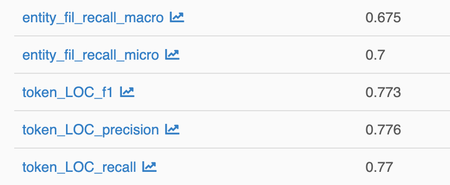

[Training] Detailed Analysis of Training Results
The main results of an experiment, especially the micro-averaged f1 score, can be accessed as follows:
get main results
experiment_results = nerbb.get_experiment_results("<experiment_name>")
nerbb get_experiment_results <experiment_name> # prints overview on runs
Python: see ExperimentResults for details on how to use experiment_results
In addition, on may have a look at much more detailed results of an experiment
using mlflow or tensorboard.
get detailed results
Store.mlflow("start") # + enter http://localhost:5000 in your browser
Store.tensorboard("start") # + enter http://localhost:6006 in your browser
nerbb mlflow # + enter http://localhost:5000 in your browser
nerbb tensorboard # + enter http://localhost:6006 in your browser
Python: The underlying processes can be stopped using
Store.mlflow("stop")
and Store.tensorboard("stop").
-
mlflowdisplays precision, recall and f1 score for every single class, as well the respective micro- and macro-averages over all classes, both on the token and entity level.The following excerpt shows
-
the micro- and macro-averages of the recall on the entity level
-
precision, recall and f1 score for the LOC(ation) class on the token level

In addition, one has access to the log file and the confusion matrices (token and entity level) of the model predictions on the test set.
A small excerpt is shown below:

-
-
tensorboardshows the learning curves of important metrics like the loss and the f1 score.A small excerpt is shown below: